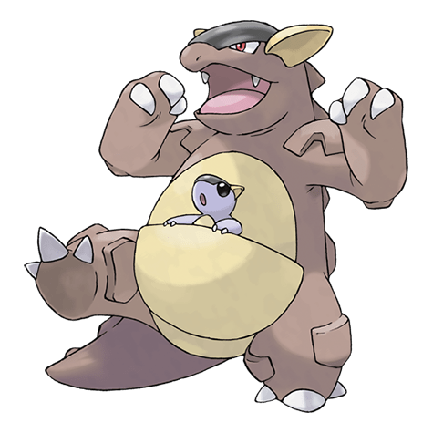

Назад
Кангасхан

Кангасхан — Покемон первого поколения под номером 115 в Pokedex. Обитает он в регионе Канто и относится к Нормальному типу. Кангасхан не имеет постоянной стадии эволюции. Увидев, как детёныш Кангасхан играет один, ни в коем случае не стоит пытаться поймать его. Скорее всего, родитель где-то неподалёку и весьма разгневается, обнаружив своего детёныша в чужих руках.
Тип:
Нормальный
Эволюция
# 115 Кангасхан